전기공사기사 (2019-09-21 기출문제)
1과목: 전기응용 및 공사재료
1. 전기철도에서 흡상변압기의 용도는?
- 궤도용 신호변압기
- 전자유도 경감용 변압기
- 전기 기관차의 보조 변압기
- 전원의 불평형을 조정하는 변압기
(정답률: 66%)

2. 권상하중이 100t이고 권상속도가 3m/min인 권상기용 전동기를 설치하였다. 전동기의 출력(kW)은 약 얼마인가? (단, 전동기의 효율은 70%이다.)
- 40
- 50
- 60
- 70
(정답률: 74%)
3. 동일한 교류전압(E)을 다이오드 3상 정류회로로 3상 전파 정류할 경우 직류전압(Ed)은? (단, 필터는 없는 것으로 하고 순저항부하이다.)
- Ed = 0.45E
- Ed = 0.9E
- Ed = 1.17E
- Ed = 2.34E
(정답률: 61%)
4. FET에서 핀치 오프(pinch off)전압이란?
- 채널 폭이 막힌 때의 게이트의 역방향 전압
- FET에서 애벌런치 전압
- 드레인과 소스 사이의 최대 전압
- 채널 폭이 최대로 되는 게이트의 역방향 전압
(정답률: 61%)
5. 다음 광원 중 발광효율이 가장 좋은 것은?
- 형광등
- 크세논등
- 저압나트륨등
- 메탈할라이드등
(정답률: 62%)
6. 연료는 수소 H2와 메탄올 CH3OH가 사용되며 전해액은 KOH가 사용되는 연료전지는?
- 산성 전해액 연료전지
- 고체 전해액 연료전지
- 알칼리 전해액 연료전지
- 용융염 전해액 연료전지
(정답률: 73%)
7. 전동기의 출력이 15kW, 속도 1800rpm으로 회전하고 있을 때 발생되는 토크(kg·m)는 약 얼마인가?
- 6.2
- 7.4
- 8.1
- 9.8
(정답률: 75%)
8. 알루미늄 및 마그네슘의 용접에 가장 적합한 용접방법은?
- 탄소 아크용접
- 원자수소 용접
- 유니온멜트 용접
- 불활성가스 아크용접
(정답률: 60%)
9. 시감도가 최대인 파장 555㎚의 온도(K)는 약 얼마인가? (단, 빈의 법칙의 상수는 2896㎛·K이다.)
- 5218
- 5318
- 5418
- 5518
(정답률: 61%)
10. 어떤 전구의 상반구 광속은 2000lm, 하반구 광속은 3000lm 이다. 평균 구면 광도는 약 몇 cd인가?
- 200
- 400
- 600
- 800
(정답률: 63%)
11. 전선관 접속재가 아닌 것은?
- 유니버셜 엘보
- 콤비네이션 커플링
- 새들
- 유니온 커플링
(정답률: 73%)
12. 단면적 500mm2 이상의 절연 트롤리선을 시설할 경우 굴곡 반지름이 3m 이하의 곡선부분에서 지지점간 거리(m)는?
- 1
- 1.2
- 2
- 3
(정답률: 49%)
13. 다음 중 절연의 종류가 아닌 것은?
- A종
- B종
- D종
- H종
(정답률: 82%)
14. COS(컷아웃 스위치)를 설치할 때 사용되는 부속 재료가 아닌 것은?
- 내장크램프
- 브라켓
- 내오손용 결합애자
- 퓨즈링크
(정답률: 52%)
15. 터널 내의 배기가스 및 안개 등에 대한 투과력이 우수하여 터널조명, 교량조명, 고속도로 인터체인지 등에 많이 사용되는 방전등은?
- 수은등
- 나트륨등
- 크세논등
- 메탈할라이드등
(정답률: 82%)
16. 피뢰를 목적으로 피보호물 전체를 덮은 연속적인 망상도체(금속편도 포함)는?
- 수직도체
- 인하도체
- 케이지
- 용마루 가설도체
(정답률: 76%)
17. 연속열 등기구를 천장에 매입하거나 들보에 설치하는 조명방식으로 일반적으로 사무실에 설치되는 건축화 조명 방식은?
- 밸런스 조명
- 광량 조명
- 코브 조명
- 코퍼 조명
(정답률: 49%)
18. 그림은 애자 취부용 금구를 나타낸 것이다. 앵커쇄클은 어느 것인가?
(정답률: 63%)
19. 배전반 및 분전반에 대한 설명으로 틀린 것은?
- 개폐기를 쉽게 개폐할 수 있는 장소에 시설하여야 한다.
- 옥측 또는 옥외 시설하는 경우는 방수형을 사용하여야 한다.
- 노출하여 시설되는 분전반 및 배전반의 재료는 불연성의 것이어야 한다.
- 난연성 합성수지로 된 것은 두께가 최소 2mm 이상으로 내아크성인 것이어야 한다.
(정답률: 74%)
20. 강판으로 된 금속 버스덕트 재료의 최소 두께(mm)는? (단, 버스덕트의 최대 폭은 150mm 이하이다.)
- 0.8
- 1.0
- 1.2
- 1.4
(정답률: 43%)
2과목: 전력공학
21. 전력손실이 없는 송전선로에서 서지파(진행파)가 진행하는 속도는? (단, L : 단위 선로길이 당 인덕턴스, C : 단위 선로길이 당 커패시턴스이다)
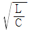
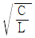
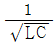
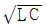
(정답률: 29%)
22. 가공전선과 전력선간의 역섬락이 생기기 쉬운 경우는?
- 선로손실이 큰 경우
- 철탑의 접지저항이 큰 경우
- 선로정수가 균일하지 않은 경우
- 코로나 현상이 발생하는 경우
(정답률: 30%)
23. 전력계통 설비인 차단기와 단로기는 전기적 및 기계적으로 인터록(interlock)을 설치 및 연계하여 운전하고 있다. 인터록의 설명으로 옳은 것은?
- 부하 통전시 단로기를 열 수 있다.
- 차단기가 열려 있어야 단로기를 닫을 수 있다.
- 차단기가 닫혀 있어야 단로기를 열 수 있다.
- 부하 투입 시에는 차단기를 우선 투입한 후 단로기를 투입한다.
(정답률: 33%)
24. 수력발전소에서 사용되고, 횡축에 1년 365일을 종축에 유량을 표시하는 유황곡선이란?
- 유량이 적은 것부터 순차적으로 배열하여 이들 점을 연결한 것이다.
- 유량이 큰 것부터 순차적으로 배열하여 이들 점을 연결한 것이다.
- 유량의 월별 평균값을 구하여 선으로 연결한 것이다.
- 각 월에 가장 큰 유량만을 선으로 연결한 것이다.
(정답률: 22%)
25. 선로로부터 기기를 분리 구분할 때 사용되며, 단순히 충전된 선로를 개폐하는 장치는?
- 단로기
- 차단기
- 변성기
- 피뢰기
(정답률: 33%)
26. 송전선로의 수전단을 단락한 경우 송전단에서 본 임피던스가 300Ω이고 수전단을 개방한 경우에는 900Ω일 때 이 선로의 특성임피던스 Z0(Ω)는 약 얼마인가?
- 490
- 500
- 510
- 520
(정답률: 25%)
27. 단상 변압기 3대를 △결선으로 운전하던 중 1대의 고장으로 V결선된 경우, △결선에 대한 V결선의 출력비는 약 몇 %인가?
- 52.2
- 57.7
- 66.7
- 86.6
(정답률: 30%)
28. 송전단 전압이 345kV, 수전단 전압이 330kV, 송수전 양단의 변압기 리액턴스는 각각 10Ω과 15Ω이고, 선로의 리액턴스는 85Ω인 계통이 있다. 이 선로에서 전달할 수 있는 최대 유효전력(MW)은?
- 1035.0
- 1138.5
- 1198.4
- 1463.7
(정답률: 14%)
29. 전력계통에서 지락전류의 특성으로 옳은 것은?
- 충전전류(진상)
- 충전전류(지상)
- 유도전류(진상)
- 유도전류(지상)
(정답률: 27%)
30. 송전선로의 건설비와 전압과의 관계를 나타낸 것은?
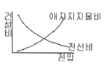
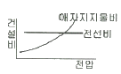
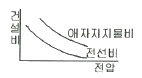
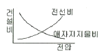
(정답률: 27%)
31. 배전계통에서 전력용 콘덴서를 설치하는 목적으로 옳은 것은?
- 배전선의 전력손실 감소
- 전압강하 증대
- 고장 시 영상전류 감소
- 변압기 여유율 감소
(정답률: 31%)
32. 4단자 정수가 A, B, C, D인 송전선로의 등가 π회로를 그림가 같이 표현하였을 때 Z1에 해당하는 것은?
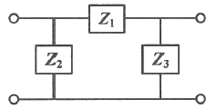
- B
- A/B
- D/B
- 1/B
(정답률: 28%)
33. 직류 송전방식이 교류 송전방식에 비하여 유리한 점을 설명한 것으로 틀린 것은?
- 절연계급을 낮출 수 있다.
- 계통간 비동기 연계가 가능하다.
- 표피효과에 의한 송전손실이 없다.
- 정류가 필요 없고 승압 및 강압이 쉽다.
(정답률: 27%)
34. 송전계통에서 자동제폐로 방식의 장점이 아닌 것은?
- 신뢰도 향상
- 공급 지정시간의 단축
- 보호계전 방식의 단순화
- 고장상의 고속도 차단, 고속도 재투입
(정답률: 29%)
35. 수력발전소에서 사용되는 다음의 수차 중 특유속도가 가장 높은 수차는?
- 팰턴 수차
- 프로펠러 수차
- 프란시스 수차
- 사류 수차
(정답률: 21%)
36. 3상 배전선로의 말단에 지상역률 80%, 160kW인 평형 3상 부하가 있다. 부하점에 전력용 콘덴서를 접속하여 선로 손실을 최소가 되게 하려면 전력용 콘덴서의 필요한 용량(kVA)은? (단, 부하단 전압은 변하지 않는 것으로 한다.)
- 100
- 120
- 160
- 200
(정답률: 29%)
37. 연가를 하는 주된 목적은?
- 혼촉 방지
- 유도뢰 방지
- 단락사고 방지
- 선로정수 평형
(정답률: 32%)
38. 다중접지 3상 4선식 배전선로에서 고압측(1차측) 중성선과 저압측(2차측) 중성선을 전기적으로 연결하는 목적은?
- 저압측의 단락 사고를 검출하기 위함
- 저압측의 접지 사고를 검출하기 위함
- 주상 변압기의 중성선측 부싱을 생략하기 위함
- 고저압 혼촉 시 수용가에 침입하는 상승전압을 억제하기 위함
(정답률: 32%)
39. 제5고조파 전류의 억제를 위해 전력용 커패시터에 직렬로 삽입하는 유도 리액턴스의 값으로 적당한 것은?
- 전력용 콘덴서 용량의 약 6% 정도
- 전력용 콘덴서 용량의 약 12% 정도
- 전력용 콘덴서 용량의 약 18% 정도
- 전력용 콘덴서 용량의 약 24% 정도
(정답률: 28%)
40. 화력발전소의 랭컨 사이클(Rankine cycle)로 옳은 것은?
- 보일러 → 급수펌프 → 터빈 → 복수기 → 과열기 → 다시 보일러로
- 보일러 → 터빈 → 급수펌프 → 과열기 → 복수기 → 다시 보일러로
- 급수펌프 → 보일러 → 과열기 → 터빈 → 복수기 → 다시 급수펌프로
- 급수펌프 → 보일러 → 터빈 → 과열기 → 복수기 → 다시 급수펌프로
(정답률: 27%)
3과목: 전기기기
41. 동기전동기의 토크와 공급전압과의 관계로 옳은 것은?
- 무관
- 정비례
- 반비례
- 2승에 비례
(정답률: 17%)
42. SCR이 턴오프(turn-off)되는 조건은?
- 게이트에 역방향 전류를 흘린다.
- 게이트에 역방향의 전압을 인가한다.
- 게이트의 순방향 전류를 0으로 한다.
- 애노드 전류를 유지전류 이하로 한다.
(정답률: 18%)
43. 무부하에서 자기 여자로 전압을 확립하지 못하는 직류발전기는?
- 분권발전기
- 직권발전기
- 타여자발전기
- 차동복권발전기
(정답률: 14%)
44. 권선형 유도전동기의 2차측 저항을 2배로 하면 최대토크 값은 어떻게 되는가?
- 3배로 된다.
- 2배로 된다.
- 1/2로 된다.
- 변하지 않는다.
(정답률: 31%)
45. 동기발전기에서 기전력의 파형을 좋게 하고 누설 리액턴스를 감소시키기 위하여 채택한 권선법은?
- 집중권
- 분포권
- 단절권
- 전절권
(정답률: 28%)
46. 200V 3상 유도전동기의 전부하 슬립이 3%이다. 공급전압의 20% 떨어졌을 때의 전부하 슬립(%)은 약 얼마인가?
- 2.3
- 3.3
- 3.7
- 4.7
(정답률: 14%)
47. 직류 분권전동기의 정격전압이 300V, 전부하 전기자 전류 50A, 전기자 저항 0.3Ω이다. 이 전동기의 기동전류를 전부하 전류의 130%로 제한시키기 위한 기동저항 값은 약 몇 Ω인가?
- 4.3
- 4.8
- 5.0
- 5.5
(정답률: 17%)
48. 변압기의 동손은 부하전류의 몇 제곱에 비례하는가?
- 0.5
- 1
- 2
- 4
(정답률: 32%)
49. 평형 3상 교류가 대칭 3상 권선에 인가된 경우 회전자계에 대한 설명으로 틀린 것은?
- 발생 회전자계 방향 변경 가능
- 발생 회전자계는 전류와 같은 주기
- 발생 회전자계 속도는 동기속도보다 늦음
- 발생 회전자계 세기는 각 코일 최대 자계의 1.5배
(정답률: 21%)
50. 3권선 변압기에 대한 설명으로 틀린 것은?
- 3차 권선에서 발전소 내부의 전력을 다른 계통으로 공급할 수 있다.
- Y-Y-△ 결선을 하여 제3고조파 전압에 의한 파형의 변형을 방지한다.
- 3차 권선에 조상기를 접속하여 송전선의 전압조정과 역률을 개선한다.
- 3차 권선에 2차 권선의 주파수와 다른 주파수를 얻을 수 있으므로 유도기의 속도제어에 사용된다.
(정답률: 23%)
51. 분상 기동형 단상 유도전동기의 전원 측에 연결할 수 있는 가장 적합한 변압기의 결선은?
- 환상 결선
- 대각 결선
- 포크 결선
- 스코트 결선
(정답률: 29%)
52. 3상 직권 정류자 전동기의 특성에 관한 설명으로 틀린 것은?
- 펌프, 공작 기계 등 기동토크가 크고 속도제어범위가 크게 요구되는 곳에 사용된다.
- 직권특성의 변속도 전동기이며, 토크는 전류의 제곱에 비례하기 때문에 기동토크가 대단히 크다.
- 역률은 저속도에서는 좋지 않으나 동기속도 근처나 그 이상에서는 대단히 양호하며 거의 100%이다.
- 효율은 저속도에서도 좋지만, 고속도에서는 거의 일정하며, 동기속도 근처에서는 가장 좋지 못한 동일한 정격의 3상 유도전동기에 비해 앞선다.
(정답률: 19%)
53. 3상 변압기 2대를 병렬운전하고자 할 때 병렬운전이 불가능한 결선 방식은?
- △-Y와 Y-△
- △-Y와 Y-Y
- △-Y와 △-Y
- △-△와 Y-Y
(정답률: 32%)
54. 유도전동기의 제동법으로 틀린 것은?
- 3상 제동
- 회생제동
- 발전제동
- 역상제동
(정답률: 30%)
55. 철손 1.6kW, 전부하동손 2.4kW인 변압기에는 약 몇 % 부하에서 효율이 최대로 되는가?
- 82
- 95
- 97
- 100
(정답률: 27%)
56. 스테핑 모터에 대한 설명으로 틀린 것은?
- 위치제어를 하는 분야에 주로 사용된다.
- 입력된 펄스 신호에 따라 특정 각도만큼 회전하도록 설계된 전동기이다.
- 스텝각이 클수록 1회전당 스텝수가 많아지고 축 위치의 정밀도는 높아진다.
- 양방향 회전이 가능하고 설정된 여러 위치에 정지하거나 해당 위치로부터 기동할 수 있다.
(정답률: 23%)
57. 동기전동기의 위상특성곡선으로 옳은 것은? (단, P를 출력, If를 계자전류, Ia를 전기자전류, cosθ를 역률로 한다.)
- P - Ia 곡선, If는 일정
- If - Ia 곡선, P는 일정
- P - If 곡선, Ia는 일정
- If - Ia 곡선, cosθ는 일정
(정답률: 26%)
58. 직류발전기에서 전기자반작용에 대한 설명으로 틀린 것은?
- 전기자 중성축이 이동하여 주자속이 증가하고 기전력을 상승시킨다.
- 직류발전기에 미치는 영향으로는 중성축이 이동되고 정류자 편간의 불꽃 섬락이 일어난다.
- 전기자 전류에 의한 자속이 계자 자속에 영향을 미치게 하여 자속 분포를 변화시키는 것이다.
- 전기자권선에 전류가 흘러서 생긴 기자력은 계자 기자력에 영향을 주어서 자속의 분포가 기울어진다.
(정답률: 26%)
59. 직류 분권발전기의 정격전압 200V, 정격출력 10kW, 이때의 계자전류는 2A, 전압변동률을 4%라고 한다. 발전기의 무부하전압(V)은?
- 208
- 210
- 220
- 228
(정답률: 27%)
60. 3상 동기기에서 단자전압 V, 내부 유기전압 E, 부하각이 δ 일 때, 한 상의 출력은? (단, 전기자 저항은 무시하며, 누설 리앤턴스는 xs이다.)
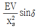
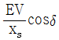
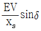
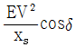
(정답률: 29%)
4과목: 회로이론 및 제어공학
61. 2개의 전력계를 사용하여 3상 평형부하의 역률을 측정하고자 한다. 전력계의 지시 값이 각각 P1, P2 일 때 이 회로의 역률은?
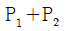
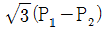
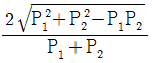
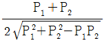
(정답률: 29%)
62. 기본파의 40%인 제 3고조파와 20%인 제5고조파를 포함하는 전압의 왜형률은?
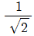
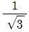
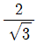
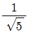
(정답률: 25%)
63. R=50 Ω, L=200mH의 직렬회로에서 주파수 50㎐의 교류전원에 의한 역률은 약 몇 % 인가?
- 62.3
- 72.3
- 82.3
- 92.3
(정답률: 24%)
64. 무한장 평행 2선 선로에서 주파수 4㎒의 전압을 가하였을 때 전압의 위상정수는 약 몇 rad/m인가? (단, 전파속도는 3×108㎧이다.)
- 0.0634
- 0.0734
- 0.0838
- 0.0934
(정답률: 23%)
65. 그림과 같은 회로의 임피던스 파라미터 Z22는?
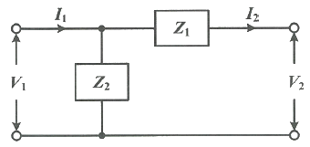
- Z1
- Z2
- Z1 + Z2
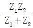
(정답률: 19%)
66. RC 직렬회로에 t=0일 때 직류전압 100V를 인가하면, 0.2초에 흐르는 전류(mA)는? (단, R=1000Ω, C=50㎌이고, 커패시터의 초기충전 전하는 없다.)
- 1.83
- 1.37
- 2.98
- 3.25
(정답률: 24%)
67. 전원과 부하가 모두 △결선된 3상 평형 회로에서 선간 전압이 400V, 부하 임피던스가 4+j3(Ω)인 경우 선전류의 크기는 몇 A인가?
- 80
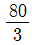
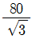
- 80√3
(정답률: 25%)
68. 2차 선형 시불변 시스템의 전달함수
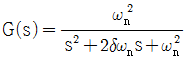
에서 ωn이 의미하는 것은?- 감쇠계수
- 비례계수
- 고유 진동 주파수
- 공진 주파수
(정답률: 23%)
69. 불평형 3상 전압(Va, Vb, Vc)에 대한 영상분(V0), 정상분(V1), 역상분(V2)을 모두 더하면?
- 0
- 1
- Va
- Va + 1
(정답률: 20%)
70. 그림과 같은 직류회로에서 저항 R(Ω)의 값은?
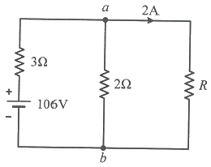
- 10
- 20
- 30
- 40
(정답률: 24%)
71. 2차 제어시스템의 특성방정식이
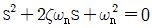
인 경우, s가 서로 다른 2개의 실근을 가졌을 때의 제동 특성은?- 과제동
- 무제동
- 부족제동
- 임계제동
(정답률: 20%)
72. 논리식
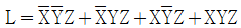
를 간소화한 식은?- Z
- XZ
- YZ
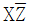
(정답률: 29%)
73. 자동제어계 구성 중 제어요소에 해당되는 것은?
- 검출부
- 조절부
- 기준입력
- 제어대상
(정답률: 29%)
74.
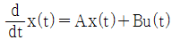
,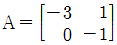
인 시스템에서 상태 천이행렬(state transition matrix)을 구하면?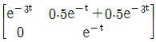
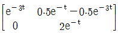
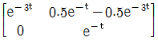
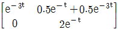
(정답률: 18%)
75. 그림과 같은 블록선도의 등가 전달함수는?
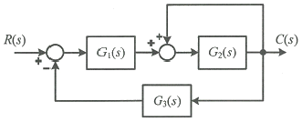
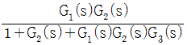
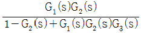
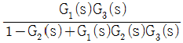
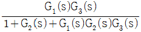
(정답률: 29%)
76. 주파수 전달함수가
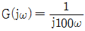
인 계에서 ω = 0.1rad/s일 때의 이득(dB)과 위상각 θ는 각각 얼마인가?- 20dB, 90°
- 40dB, 90°
- -20dB, -90°
- -40dB, -90°
(정답률: 25%)
77. 특성방정식이 s3+Ks2+2s+K+1=0 으로 주어진 제어계가 안정하기 위한 K의 범위는?
- K ＞ 0
- K ＞ 1
- -1 ＜ K ＜ 1
- K ＞ -1
(정답률: 23%)
78. z 변환을 이용한 샘플 값 제어계가 안정하려면 특성방정식의 근의 위치가 있어야 할 위치는?
- z평면의 좌반면
- z평면의 우반면
- z평면의 단위원 내부
- z평면의 단위원 외부
(정답률: 29%)
79. 정상상태 응답특성과 응답의 속응성을 동시에 개선시키는 제어는?
- P제어
- PI제어
- PD제어
- PID제어
(정답률: 26%)
80.
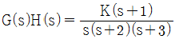
에서 근궤적의 수는?- 1
- 2
- 3
- 4
(정답률: 29%)
5과목: 전기설비기술기준 및 판단기준
81. 최대사용전압이 360kV인 가공전선이 교량과 제1차 접근상태로 시설되는 경우에 전선과 교량과의 이격거리는 최소 몇 m 이상이어야 하는가?
- 5.96
- 6.96
- 7.95
- 8.95
(정답률: 11%)
82. 옥내에 시설하는 저압용 배선기구의 시설에 관한 설명으로 틀린 것은?
- 옥내에 시설하는 저압용 배선기구의 충전 부분은 노출되지 않도록 시설한다.
- 옥내에 시설하는 저압용 비포장 퓨즈는 불연성으로 제작한 함 내부에 시설하여야 한다.
- 옥내에 시설하는 저압용의 배선기구에 전선을 접속하는 경우에는 나사로 고정해서는 안 된다.
- 욕실 등 인체가 물에 젖어있는 상태에서 전기를 사용하는 장소에서는 인체감전보호용 누전차단기가 부착된 콘센트를 시설하여야 한다.
(정답률: 26%)
83. 154 kV 가공전선과 가공약전류 전선이 교차하는 경우에 시설하는 보호망을 구성하는 금속선 중 가공전선의 바로 아래에 시설되는 것 이외의 가공약전류 전선을 아연도철선으로 조가하여 시설하는 경우 지름 몇 mm 이상인가?
- 2.6
- 3.2
- 3.6
- 4.0
(정답률: 17%)
84. 가공 직류 전차선을 전용의 부지 위에 시설 시 레일면상의 높이는 몇 m 이상인가?
- 4.0
- 4.2
- 4.4
- 4.8
(정답률: 11%)
85. 사용전압 22.9kV의 가공전선이 철도를 횡단하는 경우, 전선의 레일면상의 높이는 몇 m 이상인가?
- 5
- 5.5
- 6
- 6.5
(정답률: 28%)
86. 다심 코드 및 다심 캡타이어케이블의 일심 이외의 가요성이 있는 연동연선으로 제3종 접지공사 시 접지선의 단면적은 몇 mm2 이상이어야 하는가?
- 0.75
- 1.5
- 6
- 10
(정답률: 8%)
87. 그림은 전력선 반송통신용 결합장치의 보안장치이다. 여기에서 FD는 무엇인가?
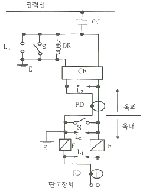
- 절연전선
- 결합필터
- 동축케이블
- 배류중계선륜
(정답률: 18%)
88. 발전기 등의 보호장치의 기준과 관련하여 발전기를 자동적으로 전로로부터 차단하는 장치를 시설하야여 하는 경우로 옳은 것은?
- 발전기에 과전류가 생긴 경우
- 발전기에 역상전류가 생긴 경우
- 발전기의 전류에 고조파가 포함된 경우
- 발전기의 부하에 누설전류가 포함된 경우
(정답률: 30%)
89. 저압전로에 사용하는 과전류차단기로 정격전류 30A의 배선용차단기에 60A의 전류가 통했을 경우 몇 분 내에 자동적으로 동작하여야 하는가?
- 2
- 6
- 10
- 15
(정답률: 24%)
90. 22000V의 특고압 가공전선으로 경동연선을 시가지에 시설할 경우 전선의 지표상 높이는 몇 m 이상이어야 하는가?
- 4
- 6
- 8
- 10
(정답률: 21%)
91. 변압기 전로의 절연내력시험에서 최대 사용전압이 22.9kV인 경우 시험전압은 최대 사용전압의 몇 배 인가? (단, 권선은 중성점 접지식 전로(중성선을 가지는 것으로서 그 중성선에서 다중 접지를 하는 것에 한한다.)에 접속하였다.
- 0.92
- 1.1
- 1.25
- 1.5
(정답률: 26%)
92. 고압 가공전선과 건조물의 상부 조영재와의 옆쪽 이격거리는 몇 m 이상인가? (단, 전선에 사람이 쉽게 접촉할 우려가 있고 케이블이 아닌 경우이다.)
- 1.0
- 1.2
- 1.5
- 2.0
(정답률: 19%)
93. 전로의 중성점 접지의 접지선을 연동선으로 할 경우 공칭단면적은 몇 mm2 이상인가? (단, 저압 전로의 중성점에 시설하는 것은 제외한다.)
- 6
- 10
- 16
- 25
(정답률: 17%)
94. 사용전압이 35000V 이하이고 또한 전선에 케이블을 사용하는 경우에 특고압 가공 인입선의 높이는 그 특고압 가공 인입선이 도로·횡단보도교·철도 및 궤도를 횡단하는 이외의 경우에 한하여 지표상 몇 m 까지로 감할 수 있는가?(오류 신고가 접수된 문제입니다. 반드시 정답과 해설을 확인하시기 바랍니다.)
- 3
- 4
- 5
- 6
(정답률: 10%)
95. 다음 ⓐ, ⓑ에 들어갈 내용으로 옳은 것은?
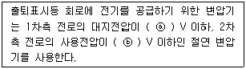
- ⓐ 150, ⓑ 30
- ⓐ 150, ⓑ 60
- ⓐ 300, ⓑ 30
- ⓐ 300, ⓑ 60
(정답률: 24%)
96. 사용전압이 22.9kV의 특고압 가공전선로에는 전화선로의 길이 12km 마다 유도전류가 몇 ㎂를 넘지 않아야 하는가?
- 1.5
- 2
- 2.5
- 3
(정답률: 29%)
97. 지중 전선로의 시설에 관한 기준으로 옳은 것은?
- 전선은 케이블을 사용하고 관로식, 암거식 또는 직접 매설식에 의하여 시설한다.
- 전선은 절연전선을 사용하고 관로식, 암거식 또는 직접 매설식에 의하여 시설한다.
- 전선은 나전선을 사용하고 내화성능이 있는 비닐관에 인입하여 시설한다.
- 전선은 절연전선을 사용하고 내화성능이 있는 비닐관에 인입하여 시설한다.
(정답률: 29%)
98. 3300V 고압 가공전선을 교통이 번잡한 도로를 횡단하여 시설하는 경우 지표상 높이를 몇 m 이상으로 하여야 하는가?
- 5.0
- 5.5
- 6.0
- 6.5
(정답률: 21%)
99. 발전소의 압축공기장치의 사용압력이 10㎏/cm2이다. 주 공기탱크의 압력계의 눈금은 최대 몇 ㎏/cm2까지 사용할 수 있는가?
- 15
- 20
- 25
- 30
(정답률: 18%)
100. 동일 지지물에 고압 가공전선과 저압 가공전선(다중접지된 중성선은 제외한다.)을 병가할 때 저압 가공전선의 위치는?
- 동일 완금류에 평행되게 시설
- 별도의 규정이 없으므로 임의로 시설
- 저압 가공전선을 고압 가공전선의 위에 시설
- 저압 가공전선을 고압 가공전선의 아래에 시설
(정답률: 29%)